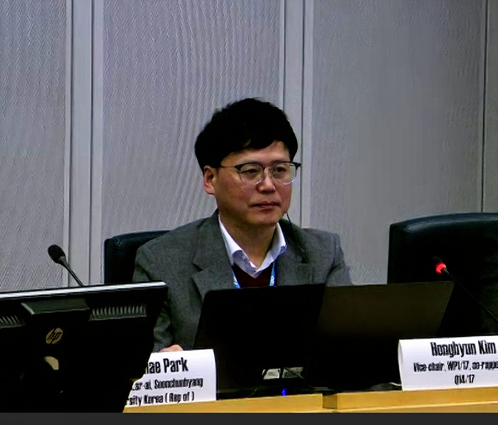

5G/6G Mobile Comm. Security
Secure architectures for 5G/6G, Open RAN, and NTN with ITU-T, ITU-R standardization
Welcome to the official homepage of Professor Jong Hyun Kim, a leading researcher in 5G/6G mobile communication security, cloud security, and cybersecurity at Sejong University's Department of Computer and Information Security. Leading the future of mobile and network security through innovative research, education, and real-world solutions at NGNS Lab.

Department of Computer and Information Security, Sejong University (2024-present). Prof Kim earned his Ph.D. in Computer Science from the University of Oklahoma in 2005 and was a principal researcher with the Electronics Telecommunications Research Institute in 2005-2024. He was also involved in standardization activities as a vice chair of WP1 and a rapporteur of Q.4 (cybersecurity) in ITU-T Study Group 17. His research interests include information Security, Cyber Security, Cloud Security (SECaaS), AI/ML-based malware detection and 5G/6G security and Standardization
Our Research focuses on cutting-edge security technologies for next-generation network security solutions.
Secure architectures for 5G/6G, Open RAN, and NTN with ITU-T, ITU-R standardization
AI-based malware, Anomaly detection, Anti-Vaccine system development
Security for NW threat analysis and countermeasure development
Security for UAVs, V2X, and D2D, Detection of UxNB anomalies
No matching entries.
No matching entries.
Weekly laboratory seminars on cutting-edge security topics. Graduate students and faculty welcome to participate in discussions on 5G/6G security challenges.
Seeking motivated undergraduate and graduate students for research participation in 6G mobile security projects. Application deadline approaching.
Upcoming invited lectures and external presentations on emerging security threats in 6G networks. Registration required for workshop attendance.
Sejong University
Chungmu Hall 407A
209 Neungdong-ro, Gwangjin-gu
Seoul, South Korea
Phone: 02-3408-3712
Email: jhk@sejong.ac.kr
Lab Website: Visit our research portal
Office Hours: By appointment
Schedule meetings for research collaboration, student advising, or industry partnerships. Please contact in advance to arrange consultation sessions and laboratory tours.